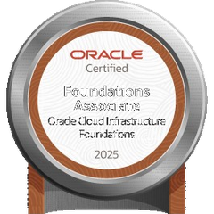
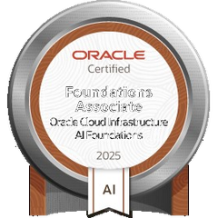

Portfolio · Viedma, Argentina
Operations management and software development.
I'm Carlos Miyén Brandolino. I run the daily operations of a hotel while advancing my degree in Computer Science and training in Oracle technologies. Two tracks that now work together: understanding the business and building the software that solves it.
Profile
About me
I bring more than 13 years of experience running business units: high-volume retail, teams of over ten people, financial control and end-to-end processes. That experience taught me something that now defines my work: an organization's problems are almost never purely technical or purely managerial — they live at the intersection.
I currently work as Assistant Manager at Hotel Austral Viedma, where that intersection is the daily job: I operate PMS and ERP systems, digitize administrative workflows and turn operational needs into documented processes. In parallel, I'm in the 3rd year of a Computer Science degree (UNPSJB) and progressing through the Tech Advanced stage of Oracle Next Education, focused on backend and cloud.
I'm not transitioning between two worlds — I work at their intersection. I analyze the
process as a manager and think it through as a developer.
Stack
Skills
Technology
Languages, tools and foundations I work with and train in.
Java
JavaScript
HTML5 / CSS3
SQL
Git / GitHub
Oracle Cloud (OCI)
JUnit 5 / Mockito
Maven
React (fundamentals)
TypeScript (fundamentals)
Management & systems
The other half of the profile: processes, data and real operations.
ERP (Odoo)
Hotel PMS (ZAK)
Google Workspace
Advanced Excel
Workflow automation
Executive documentation
Process analysis
Team leadership
Work
Featured projects
Java · Graphs · Testing
Urban Bus Network Simulator
A transport network simulation engine in Java 21: a directed graph with Dijkstra for optimal routing, layered architecture and a suite of over 100 tests with JUnit 5 and Mockito. Capstone project for Algorithms and Programming II.
React · TypeScript · Analysis
ArquiBlock — Information System
Organizational diagnosis of a real modular-construction company and the proposal of an operations management information system, delivered as an interactive web presentation built with Vite, React and TypeScript.
HTML · CSS · JavaScript
Alura ONE Portfolio
An interactive web portfolio centralizing the 8 projects from the initial track of Oracle Next Education: mobile first, Intersection Observer, animated counters and modern CSS with Flexbox, Grid and Custom Properties.
Education
Education & certifications
Bachelor's degree in Computer Science (Licenciatura en Informática)
Second year fully completed. Upcoming intermediate degree: University Programmer Analyst (expected late 2026). Focus on algorithms, data structures, operating systems, and systems analysis and design.
Oracle Next Education (ONE) — Group 9
Intensive software development program, with a backend specialization and cloud fundamentals on Oracle Cloud Infrastructure. Full course certificate ↗

Oracle Cloud Infrastructure 2025 Certified Foundations Associate
Oracle · 2026 · Verify ↗

Oracle Cloud Infrastructure 2025 Certified AI Foundations Associate
Oracle · 2026 · Verify ↗
Artificial Intelligence Fundamentals
IBM SkillsBuild · Verify ↗
Entrepreneurship Business Essentials
IBM SkillsBuild · Verify ↗
Career
Experience
Assistant Manager
Hotel Austral · Viedma, Río Negro
- End-to-end operational management of the property: coordinating reception, housekeeping, maintenance and events.
- Design of internal processes and executive documentation: protocols, management reports and purchase workflows digitized with Google Workspace.
- Daily operation of PMS (ZAK) and ERP (Odoo) systems, reporting directly to General Management.
Managing Partner & Operations Manager
Systeplac · Puerto Madryn, Chubut
- Full management of the business unit: profitability, logistics and customer service.
- Design of control tools for balances, bank reconciliations and inventory management.
- Modernization of customer-service channels (CRM) to centralize communication and sales follow-up.
Operations Manager
Autoservicio El Nacional · La Plata, Buenos Aires
- Operational management of a high-volume retail store: merchandise flow and customer satisfaction.
- Management of a team of 10+ people: shift planning, attendance control and task organization.
- Financial administration: cash audits, system closings and periodic internal control audits.
Contact
Let's connect
I'm drawn to problems where process management and software development meet: systems analysis, operations digitization, consulting and technical projects. If you work at that intersection, let's talk.